The Diagnostic Dilemma
The Ghost in the Machine
"Synchronizing feeds. We are inside the Global Command Center of Orbit-Logistics. Outside, the night sky is silent, but inside, tension fills the air. The executive team poured two billion dollars into autonomous delivery, yet they are hemorrhaging capital. Look at the wall of screens: every single green metric is a lie. Let us watch Rohan Gupta and Anjali Mehra interrogate their legacy software stack."
The Storyline: The Ghost in the Machine
The air in the Global Command Center (GCC) of Orbit-Logistics was thick, tasting of stale coffee and impending doom. Across the vast, curved screens displaying a matrix of real-time logistics data, the vibrant greens of "Optimal Route" and "On-Time Delivery" were a sickening, persistent lie.
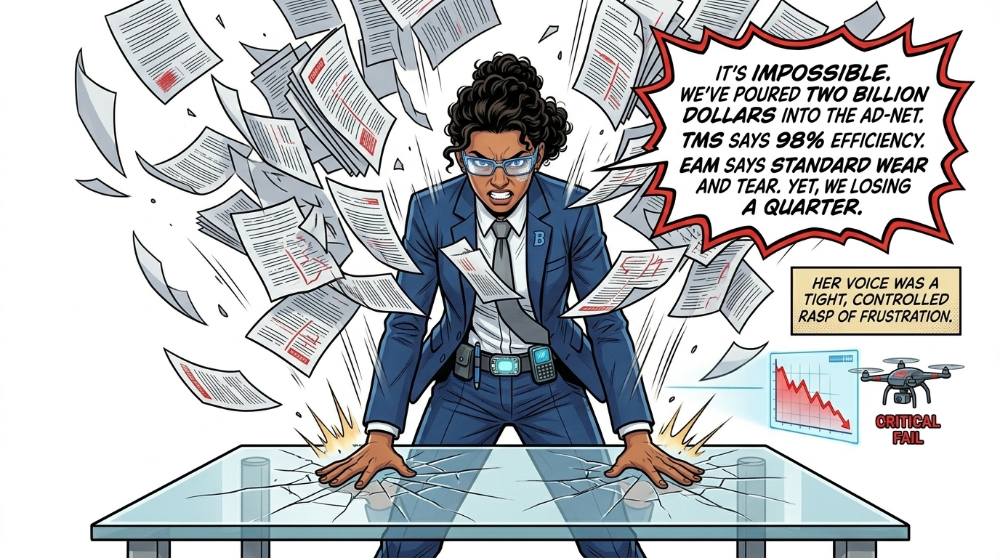
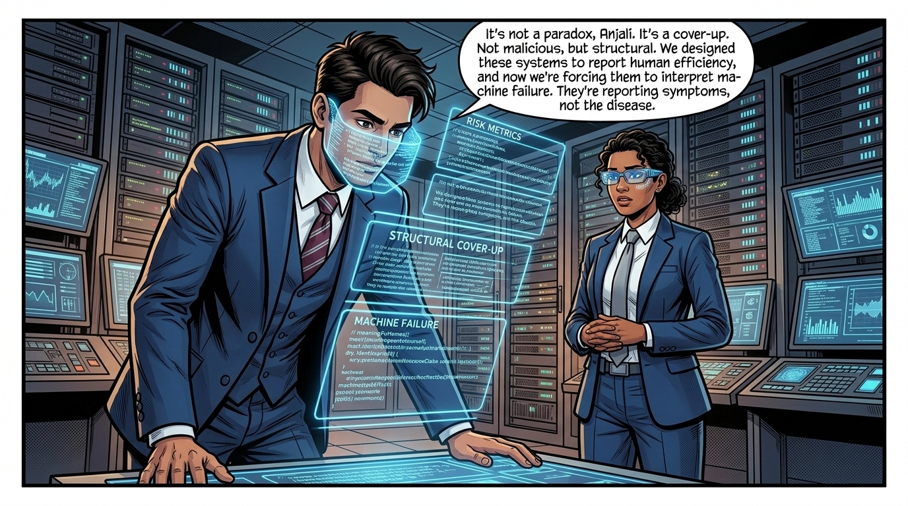
"Let us pause the scene. Traditional systems like Transportation Management (TMS) and Asset Management (EAM) were built around human variables. When a vehicle stops, the TMS assumes traffic; when components wear out, the EAM blames the driver. Neither system has a category for 'AI Decision Hesitation' or 'Micro-battery degradations.' For you, the business leader, this is the core of the Productivity Paradox: running a next-generation AI fleet on a previous-generation IT backbone simply automates the same operational blind spots."
The Legacy Failure: Symptoms, Not Causes
The core team—a mix of audit specialists, data engineers, and operations managers—were locked in a high-stakes interrogation of their own technological stack.
- Transportation Management System (TMS) — SCOR Responsiveness (RS) & Reliability (RL) Blind Spot: Used to monitor route efficiency. The legacy system flags that vehicles are constantly late or stopping mid-route, but it incorrectly categorizes these as "routing errors" or "traffic delays," concealing severe drops in Perfect Shipment Delivery (RL.1.1) and massive spikes in Order Fulfillment Cycle Time (RS.1.1).
- Enterprise Asset Management (EAM) — SCOR Asset Management (AM) Blind Spot: Used to track vehicle maintenance. The system flags a massive spike in maintenance costs and attributes it to generic "wear and tear" from drivers, obscuring the true collapse in Fleet Utilization (AM.1.1) as vehicles sit stranded in depot triage bays.
- Financials System — SCOR Cost (CO) Blind Spot: Simply shows that CapEx is rising while revenue drops, masking that Cost per Stop and Cost per Mile (CO.1.1) have inflated to $4.20/mile—more expensive than human drivers—creating the "Productivity Paradox" without explaining why.
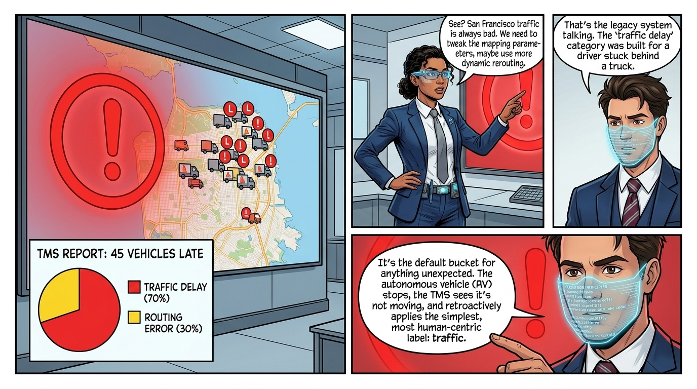
The Financials System was the silent killer, simply displaying the horrifying trend: CapEx rising, OpEx spiking, and Revenue dropping—the textbook definition of the "Productivity Paradox."
Diagnostic Phase Stakeholder Engagement Matrix
To ensure the forensic audit satisfies both board fiduciary oversight and engineering precision, the diagnostic investigation maps stakeholder concerns to target requirement vectors:
| Stakeholder | Role | Power | Interest | Documented Diagnostic Concern | Key Requirements Driven |
|---|---|---|---|---|---|
| Anjali Mehra | CFO (Fiscal Architect) | High | High | $50M quarterly EBITDA bleed; unit economics inflated to $4.20/mile | REQ-DIAG-04 (Real-Time Cost Engine) |
| Rohan Gupta | CRO (Risk Guardian) | High | High | EU AI Act Article 12 compliance; GDPR biometric liability; safe-stop loops | REQ-DIAG-03 (PII Scrubber), REQ-DIAG-05 (TPM Notary) |
| Engineering Team | System Architects | Low | High | Legacy TMS/EAM blind spots; deterministic failure taxonomy | REQ-DIAG-01 (Telemetry), REQ-DIAG-02 (Classifier) |
| Fleet Operations | Depot Managers | Low | High | HITL triage queue backlog; teleoperator intervention costs | REQ-DIAG-02 (HITL Console) |
| Volt-Tech | External Supplier | Medium | Low | Battery warranty dispute liability; obfuscated degradation data | ABB-BAT-01 (Battery Ingestion Bridge) |
| EU Regulators | Regulatory Body | High | Low | High-risk AI conformity; unredacted public video streams | NFR-SEC-01 (PII Redaction), NFR-SEC-02 (TPM Signing) |
The Unification: Establishing a Single Source of Truth
Rohan's plan was radical and immediate: bypass the legacy reports and establish a cross-system Unified Operational Data Layer.
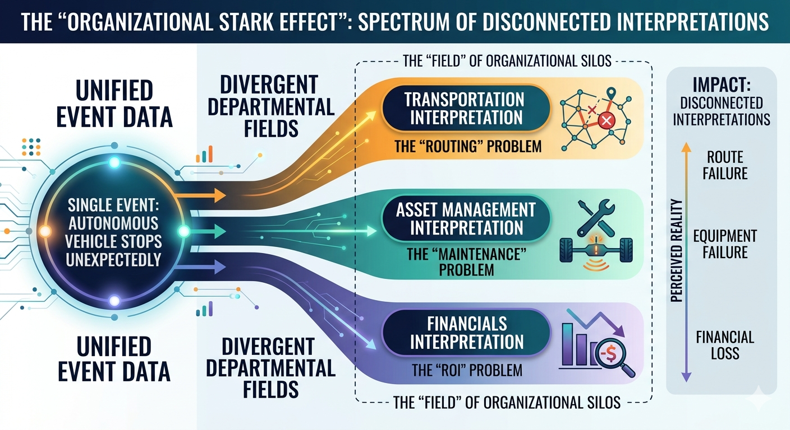
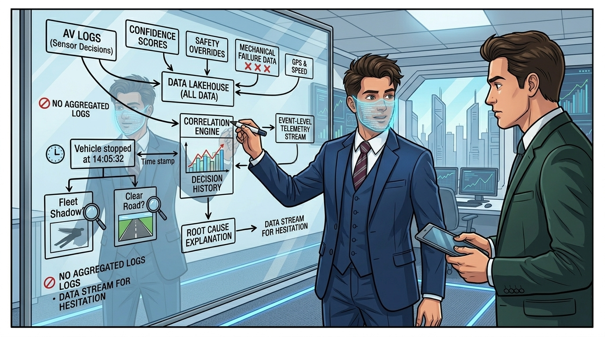
Instrumenting the Blind Spot
Rohan knew the legacy systems’ fundamental limitation: they were built for human-driven fleets. They understood speed limits and fuel consumption. They did not understand Sensor Degradation, AI Decision Hesitation, or the mechanics of a Safe Stop Loop.
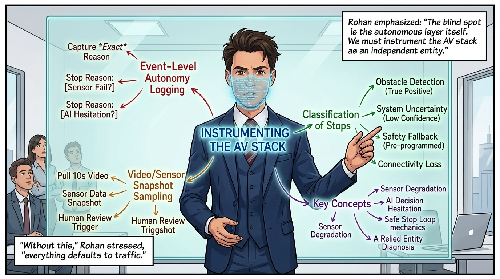
His proposal included a new, mandatory logging protocol:
- Event-Level Autonomy Logging: Capture the exact reason for any unplanned stop.
- Classification of Stops: Move beyond "Stopped" to categories like Obstacle Detection (True Positive), System Uncertainty (Low Confidence Score), Safety Fallback (Pre-programmed), and Connectivity Loss.
- Video/Sensor Snapshot Sampling: At every unplanned stop, pull a ten-second video and sensor data snapshot for human review. "Without this," Rohan stressed, "everything defaults to 'traffic'."
"To solve this, Rohan introduces a strict Failure Taxonomy and bans generic labels like 'traffic.' In a fiduciary audit, the AI's primary duty is Anti-Obfuscation. If edge data is missing or desynced, the AI flags the dataset as untrustworthy rather than providing partial analysis. This ensures that 'Blind Spots' are never buried under generic legacy labels. Here is the taxonomy we deployed to enforce root-cause classification:"
Forcing Truth: The Failure Taxonomy[5]
The most critical step was to kill the generic labels that masked the crisis. "From this moment forward, no report can use the tags 'traffic delay' or 'generic wear and tear'," Rohan decreed. "The teams must classify the root cause. If they cannot classify it precisely, they escalate it—they do not bury it."
- Sensor Ambiguity: When cameras or LiDAR return conflicting confidence levels.
- Mapping Error: Discrepancies between edge map models and physical routing lines.
- Software Hesitation: Safe-stop loops triggered by AI decision uncertainty.
- Connectivity Loss: Intermittent packet losses between vehicles and routing servers.
- Mechanical Fault (Actual): Confirmed physical degradation.
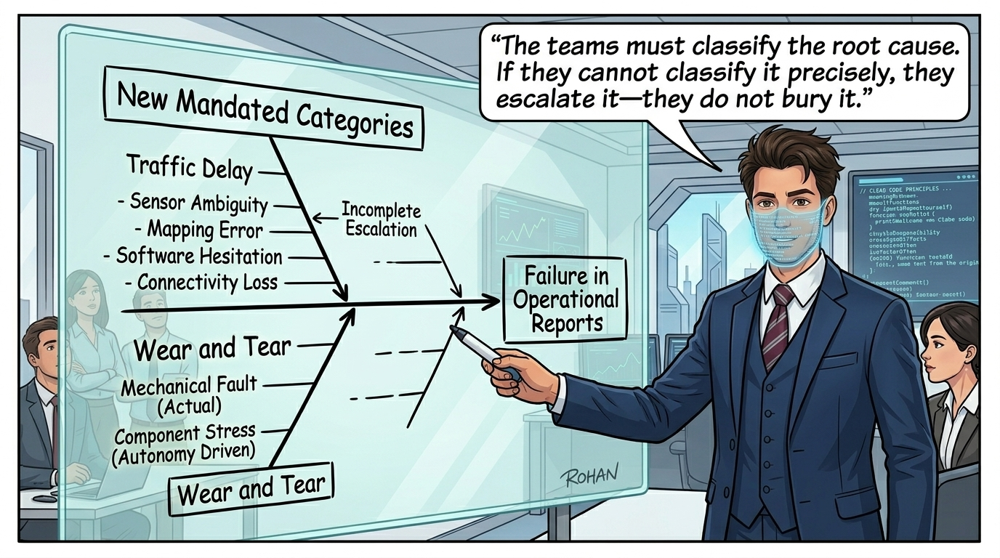
Unmasking the Hidden Human Safety Net
The autonomous system was hemorrhaging money in two ways: the mechanical cost of failure, and the hidden cost of the human safety net put in place to catch those failures.
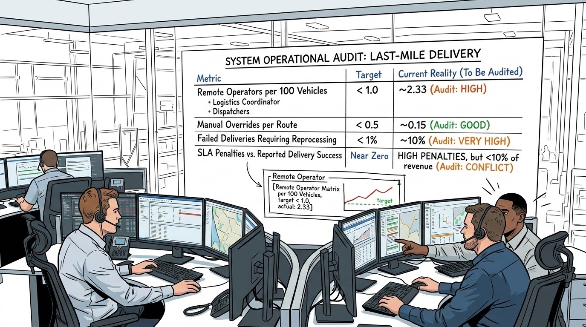
"The 'autonomous' network is quietly supported by a large, expensive human safety net," Rohan stated. "The cost of that human intervention—the remote operators, the reprocessing, the SLA penalties—is entirely missing from our current unit economics."
Risk-Adjusted Unit Economics (SCOR Cost & Reliability Realignment)
This brought him and Anjali Mehra to the core financial redefinition. The board saw "Cost Per Delivery" as a simple calculation of fuel and depreciation. To align with SCOR Cost (CO.1.1 — Cost per Stop / Cost per Mile) and protect SCOR Reliability (RL.1.1 — Perfect Shipment Delivery), they needed to see Risk-Adjusted Unit Economics:
Cost per delivery = (CapEx + OpEx + Intervention Cost + Failure Recovery Cost)
This new model segmented the AD-Net's performance ruthlessly: profitable vs. loss-making routes, and stable vs. high-risk geographies. "Under SCOR CO.1.1, loaded autonomous costs currently reach $4.20/mile versus $2.10/mile for manual contractors because of unbudgeted teleoperator rescue buffers and towing," Anjali concluded[2][4]. "This risk-adjusted metric will tell us, without emotion, where autonomy actually realizes value and where it is bleeding capital."
"We now enter the execution phase. Rushing AI without structure simply automates the same legacy blind spots. Rohan lays out a surgical 9-Step Plan. I hold the fiduciary duties of Anti-Obfuscation, Completeness, Precision, and Humility here as the Executive Chair. Observe Step 8: Human-in-the-loop (HITL). Consider this comparison: in a 2024 postal logistics pilot in Germany, automated path adjustments without human feedback suffered from drift, eventually grounding 14% of vans due to harmless fog. Rohan's HITL safeguard ensures the model learns from human corrections rather than repeating errors."
The AI Imperative: Forensic Investigator, Not Dashboard
"The goal isn’t 'add AI'," Rohan said, gesturing to the lying dashboards. "It makes AI see what your systems currently can’t. Speed matters, but rushing in a generic AI without structure will only automate the same blind spots."
- Start Narrow and Define the Use Case: Focus on the single, high-impact, business-critical use case: "Why are vehicles stopping mid-route, and what is the true, actionable cause?"
- Define the AI Objective: Classify every stop event into a verifiable, true root cause category, moving beyond generic metrics like "traffic" or "delay."
- Aggregate Raw Telemetry: Ingest vehicle telemetry, autonomy logs, sensor snapshots, and maintenance records into a single, unified pipeline.
- Discover Failure Modes: Use unsupervised learning (clustering) to detect unknown failure modes and hidden patterns across routes and vehicles.
- Implement Multimodal AI: Cross-analyze high-resolution camera frames simultaneously against LiDAR and ultrasonic sensor readings to see what the vehicle saw vs. what physically existed.
- Achieve Actionable Diagnosis: Definitively determine if an object is a genuine physical obstacle or a misclassified sensor artifact (such as a shadow or road spray).
- Set an Aggressive Timeline: Deliver a functional classification model and dashboard within six weeks.
- Utilize Human-in-the-Loop (HITL): Send low-confidence classifications to expert engineers, creating a rapid feedback loop where the human corrects and the model learns.
- Ensure Continuous Improvement: Defer to human expertise when thresholds are breached, ensuring model precision reflects verified truth.
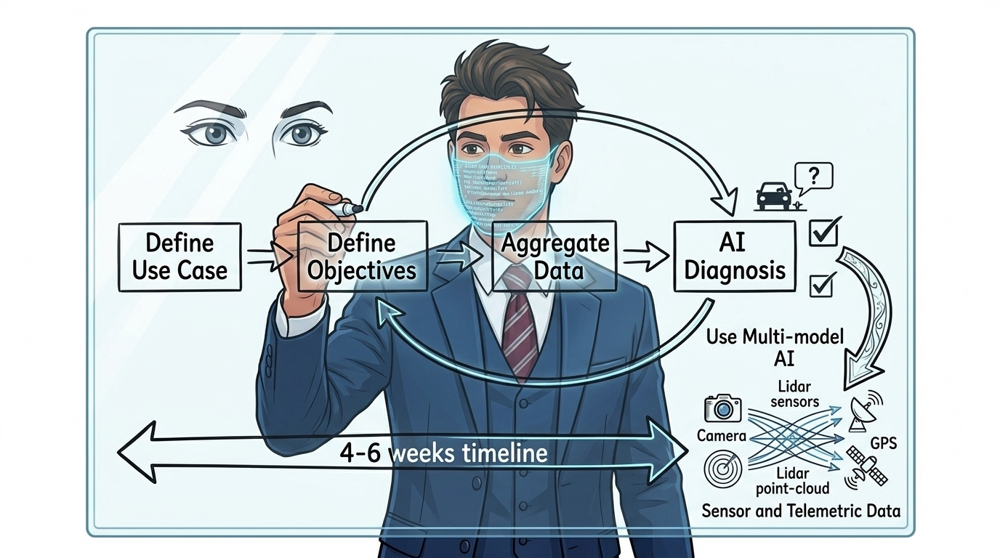
Multimodal AI & The Four Fiduciary Duties
The roadmap executes across four strategic phases, each tied to a strict fiduciary obligation:
- Phase 1: Foundation and Focus — Duty of Anti-Obfuscation: The AI must refuse to accept legacy labels. If data is insufficient, it triggers a hard escalation.
- Phase 2: Data Unification — Duty of Completeness: The AI acts as guardian of the Unified Data Layer. If telemetry is missing or desynced, it flags the set as untrustworthy.
- Phase 3: Diagnostic Implementation — Duty of Diagnostic Precision: Distinguishes between physical obstacles and sensor artifacts. If the autonomous layer fails, the diagnostic AI acts as an objective whistleblower.
- Phase 4: Rapid Deployment & HITL — Duty of Humility: Defers to human expertise when confidence thresholds are breached, preventing self-fulfilling algorithmic drift.
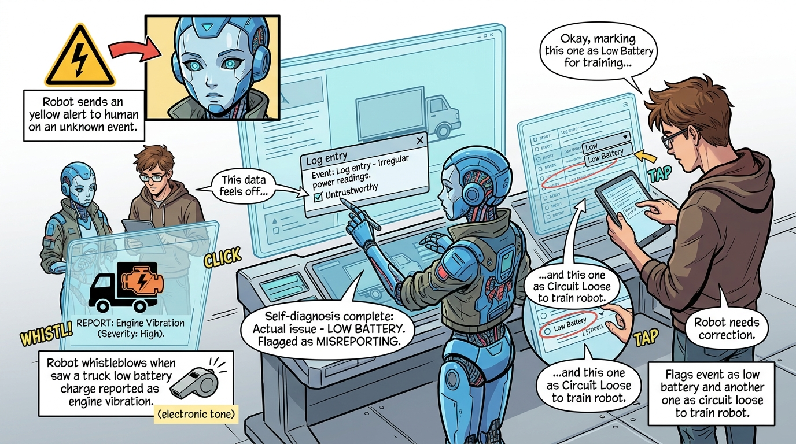
The Fiduciary Chain Reaction: Unmasking the Upstream Failure
With the 9-step diagnostic pipeline active and the four fiduciary duties locked into the data engine, the audit team deployed the new predictive analytics tool directly into Orbit’s live fleet telemetry stream. In less than forty-eight hours, the system processed over fourteen million millisecond-level telemetry packets, cross-referencing unplanned stops against LiDAR point-clouds and motor torque logs.
The diagnostic AI instantly stripped away the legacy obfuscation, bypassing the lying dashboards and exposing the true, shocking root cause:
Forensic Root-Cause Discovery:
The vehicle perception and autonomous navigation models were operating flawlessly. The primary point of failure was physical: Volt-Tech’s "Smart Batteries" were suffering from catastrophic sub-cycle voltage collapses and micro-degradations under sudden acceleration load.
"The ghost in the machine has been caught. Rohan and Anjali have proven that the $50M quarterly loss is an ecosystemic failure originating upstream at Volt-Tech. But raw telemetry is not enough to convince an executive board. To enforce fiduciary accountability and prepare for the boardroom showdown in Chapter 3, the audit team synthesizes their findings into three formal TOGAF Requirements Management deliverables: (1) The Requirements Traceability Matrix, (2) The Non-Functional Operational Bounds, and (3) The Baseline vs. Target Gap Matrix."
TOGAF Requirements Management: The Traceability Matrix[1]
In the TOGAF ADM framework, Requirements Management is the central steering hub that governs every phase. At Orbit-Logistics, diagnostic investigation is not an abstract research project; it is a fiduciary intervention to stem a $50M quarterly loss[6]. Every engineering requirement must trace directly from a boardroom financial bleed down to the millisecond-level telemetry stream and physical sensor arbitration.
"Let us examine how an enterprise stops bleeding capital. You cannot fix what you cannot trace. In TOGAF Requirements Management, the Requirements Traceability Matrix (RTM) is the enterprise's fiduciary contract. Look closely at how Rohan Gupta and Anjali Mehra construct this matrix: every single row ties a high-level boardroom pain point ($50M bleed, masked safety stops, supplier obfuscation) directly to an Architectural Building Block (ABB) and an unambiguous, mathematically verifiable SLA. Without this bidirectional lineage, engineering teams build shiny AI toys while the business dies."
"Activity 1: Deconstructing the $50M Bleed. Rohan refuses to treat the quarterly loss as a single line item. He maps the loss into three distinct causal buckets: unlogged hardware failures (62%), unnecessary human teleoperation interventions (24%), and catastrophic route re-dispatches (14%)."
"Core Decision 1: Mandatory Event-Level Binding. Notice the crucial architectural choice here: every functional requirement is bound to a specific Architectural Building Block (ABB). If an engineer proposes adding a neural network model that does not map directly to a verified requirement ID in this matrix, it is vetoed immediately at Stage-Gate 1. This prevents 'AI vanity projects' from hijacking capital."
Architectural Foundations: Disentangling ABBs and Requirements
In enterprise architecture and TOGAF ADM, practitioners often ask: Are an ABB and a Requirement the same thing? No. They govern two fundamentally different domains: the problem space versus the conceptual solution space.
1. Architecture Building Block (ABB) — The Conceptual Solution
An ABB is a vendor-neutral, reusable package of architectural capability. It specifies how capabilities are conceptually structured, defining interfaces, interaction protocols, and service boundaries (e.g., ABB-TEL-01: Ingestion Lakehouse) before any physical technology or vendor product (SBB) is selected.
2. Requirement — The Stakeholder Need
A Requirement is a formal, quantifiable statement describing what the system or business must achieve, along with operational constraints and testable SLAs (e.g., REQ-DIAG-01: Capture 100% of unlogged stop events). It represents the problem space and acceptance criteria.
Target Architecture Building Block (ABB) Catalog
Before linking to requirements in the RTM, the diagnostic solution architecture defines five core, reusable conceptual building blocks:
ABB-TEL-01: Unified Telemetry Lakehouse Ingestion
Telemetry Tier
Conceptual Role: High-throughput time-series ingestion engine capturing sub-millisecond edge vehicle kinematics, CAN-bus states, GPS trajectories, and safe-stop ring buffers without data loss.
ABB-ML-01: Multimodal Forensic Classifier
AI / Perception Tier
Conceptual Role: Cross-sensor arbitration service analyzing 10-second synchronized buffers across LiDAR, cameras, ultrasonics, and IMU to deterministically classify failure root causes (e.g., optical glare, sensor ghosting, mechanical hesitation).
ABB-FIN-01: Risk-Adjusted Unit Economics Engine
Analytics Tier
Conceptual Role: Real-time financial attribution service that continuously joins operational edge telemetry (teleoperation minutes, tow events, route delays, battery degradation) with financial ledger line items to compute true per-route delivery profitability.
ABB-BAT-01: Battery Telemetry & SOH Ingestion Bridge
Hardware / BMS Tier
Conceptual Role: Specialized BMS integration adapter that extracts high-resolution cell voltage deltas, internal impedance, and thermal micro-gradients to detect upstream supplier cell manufacturing flaws before emergency stops occur.
ABB-HITL-01: Active Human-in-the-Loop (HITL) Diagnostic Triage Console
Governance & Operations Tier
Conceptual Role: Forensic escalation workspace that queues low-confidence (< 85%) model classifications for urgent review by senior diagnostic engineers, capturing expert corrective labels to continuously benchmark and retrain upstream ML models.
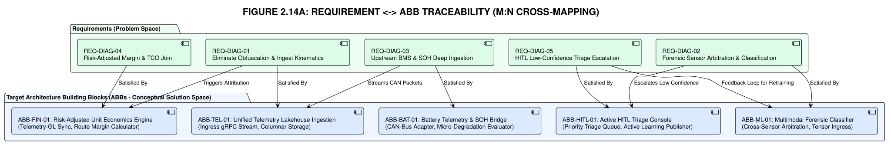
Requirements Traceability Matrix (RTM)
Each matrix entry explicitly decouples the Stakeholder Requirement (The Problem Space) from the Architecture Building Blocks (The Solution Space), showing how single requirements span multiple reusable architectural components:
Requirements Conflict Resolution Log (Consortium Rule REQ-03)
In high-throughput autonomous systems, functional ambitions often collide with physical, economic, and cryptographic realities. The Requirements Management process formally logs and resolves these tensions:
| Conflict ID | Requirement A (Performance) | Requirement B (Security/Cost) | Architectural Resolution & Decision | EAB Fiduciary Rationale |
|---|---|---|---|---|
CONF-01 |
NFR-LAT-01: Onboard perception ≤ 15ms |
NFR-SEC-02: 100% SHA-256 TPM signing |
Asynchronous Core Isolation: TPM signing offloaded to dedicated crypto MCU core via POSIX IPC. | Safety-critical vehicle actuation must never block on cryptographic I/O pipelines. |
CONF-02 |
NFR-NET-01: < 5 KB/s continuous cellular budget |
REQ-DIAG-01: ≤ 5s full forensic multimodal snapshot |
Tier-2 Event-Triggered Burst: Continuous stream strictly binary; 2–5MB rich snapshots burst only on anomaly trigger. | Guarantees annual telco budget stays under $820K while preserving 100% forensic visibility on true failures. |
CONF-03 |
NFR-SEC-01: 100% PII redaction in volatile RAM |
NFR-LAT-01: ≤ 15ms perception pipeline |
Dedicated Vision NPU Pipeline: Redaction model runs in parallel on discrete vision co-processor before frame serialization. | Zero latency penalty imposed on real-time obstacle avoidance and path planning. |
ABB-to-ABB Communication & Interface Matrix
To prevent architectural ambiguity during downstream Phase C (Application) and Phase D (Technology) implementation, the diagnostic building blocks define formal inter-ABB communication contracts:
| Source ABB | Target ABB | Protocol / Pattern | Data Payload | Latency / Delivery SLA |
|---|---|---|---|---|
ABB-EDGE-01 (Perception Arbiter) |
ABB-TEL-01 (Lakehouse Ingestion) |
Protobuf v3 over gRPC / mTLS | 10s multimodal snapshot (video + LiDAR slices ≤ 5MB) | Event-triggered; delivery ≤ 5 seconds |
ABB-EDGE-01 (Perception Arbiter) |
ABB-SEC-02 (PII Scrubber) |
In-memory POSIX IPC (Zero-Copy) | Raw camera video frame buffer | Synchronous inline; ≤ 5 ms |
ABB-ML-01 (Classifier) |
ABB-HITL-01 (Triage Console) |
REST / WebSocket over HTTPS | Failure classification + confidence score + snapshot URI | When confidence < 85%; ≤ 5 seconds |
ABB-BAT-01 (Battery Bridge) |
ABB-FIN-01 (Cost Engine) |
Protobuf over Kafka Event Mesh | Battery SOH telemetry, impedance delta & micro-drop logs | Continuous stream; ≤ 50 ms detection |
ABB-SEC-03 (TPM Signer) |
ABB-TEL-01 (Lakehouse Ingestion) |
SHA-256 signed envelope | Hardware-signed cryptographic notarization token | 100% of outbound telemetry packets |
Non-Functional Requirements (NFRs): Operational Bounds & Edge Reality
While functional requirements define what the diagnostic architecture must perform, Non-Functional Requirements (NFRs) define the physical, regulatory, and economic laws under which it must operate. Rohan and Anjali codify three mission-critical NFR pillars: Edge Latency, PII Privacy, and 5G Uplink Bandwidth.
"Pay close attention to where corporate AI dreams crash into physics. An algorithm running in a comfortable cloud lab has infinite bandwidth and zero latency constraints. But put that same model inside a four-ton autonomous van hurtling down a rainy highway, and suddenly milliseconds mean the difference between smooth delivery and a catastrophic emergency stop. Furthermore, streaming uncompressed 4K video from 10,000 vehicles over 5G will bankrupt the company faster than the battery failures! Let us review the non-negotiable architectural boundaries."
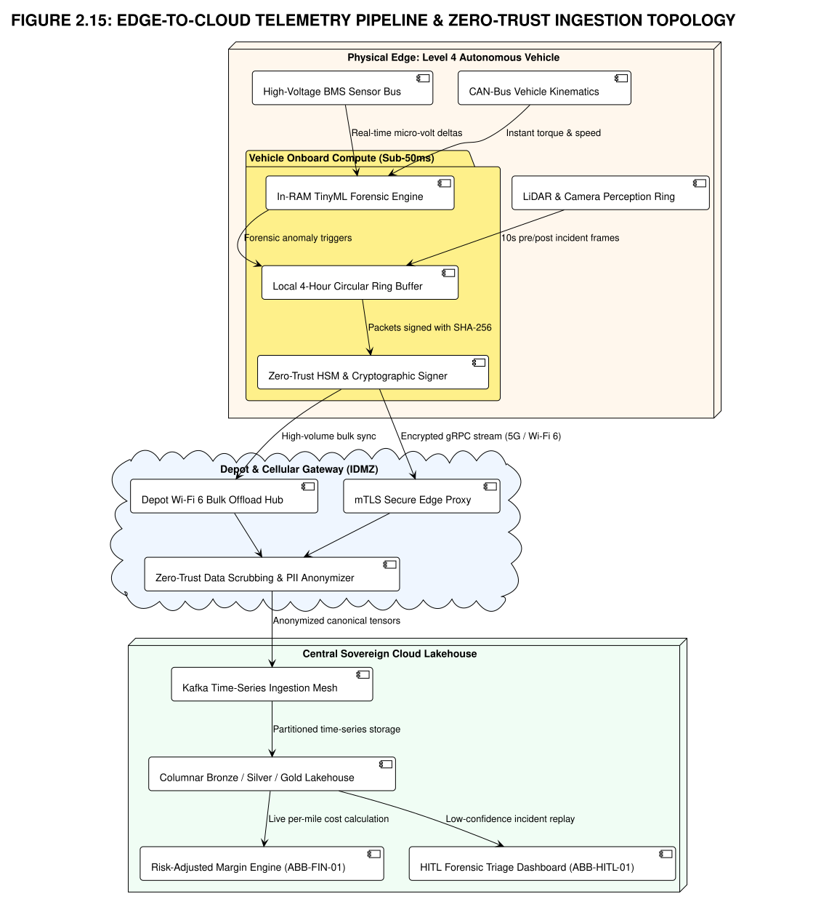
"Activity 2: Engineering the Edge Pipeline. The architecture separates compute into three distinct physical zones: On-Vehicle Edge RAM, 5G Cellular Slices, and the Central Sovereign Lakehouse."
"Core Decision 2: Zero-Trust RAM Anonymization & 3-Tier Uplink. Anjali and Rohan make two uncompromising architectural decisions: First, no camera image may touch non-volatile disk or the cellular transmitter without passing through the Edge PII Scrubber in volatile RAM. Second, they reject continuous video streaming in favor of a 3-tier offload strategy, slashing projected cellular telemetry OpEx from $14.2M/year down to under $820K/year."
1. Edge Latency & Deterministic Execution Bounds
To guarantee safety while providing forensic clarity, telemetry and inference latency budgets are split into deterministic time bands:
- Deterministic Onboard Perception & Hesitation Scoring (≤ 15 ms): The vehicle's edge computer must evaluate sensor confidence, cross-reference LiDAR against vision streams, and detect decision hesitation within a strict 15-millisecond window to prevent unsafe control oscillations.
- Local Telemetry Ring-Buffer Serialization (≤ 50 ms): When an anomaly or safe-stop loop triggers, the onboard circular buffer must snapshot and cryptographically seal 10 seconds of pre-event and post-event kinematics and sensor data to local NVMe storage within 50 ms.
- Near Real-Time Cloud Telemetry Ingestion (≤ 100 ms): High-priority telemetry events (fault codes, emergency stops, battery micro-voltage collapses) transmitted over cellular slices must be ingested and acknowledged by the central lakehouse stream within 100 ms.
- Forensic Snapshot Retrieval & HITL Alerting (≤ 5 seconds): Full multimodal snapshot reconstruction (video clips + point-cloud slices) must be delivered to the HITL triage console within 5 seconds of event occurrence.
- Disconnected Mode Autonomous Resilience: In complete cellular dead-zones, onboard edge nodes must buffer up to 4 hours of compressed diagnostic telemetry locally without loss or performance degradation, auto-syncing upon signal recovery.
2. PII Privacy, Edge Redaction & Regulatory Compliance
Operating camera-equipped autonomous vehicles in public spaces creates severe legal liability under global privacy statutes (GDPR, EU AI Act High-Risk Classifications, and CCPA). The architecture enforces Privacy-by-Design:
- Zero-Trust In-Memory Edge Anonymization: All outward-facing camera streams pass through a dedicated, hardware-accelerated computer vision model running in volatile edge RAM. Faces of pedestrians and license plates of surrounding vehicles are permanently blurred or synthetically masked before frames are written to local disk or transmitted across the cellular network.
- EU AI Act Article 12 Compliance (Automatic Event Logging): The diagnostic system maintains an immutable, tamper-evident log of all autonomous decision cycles, safety overrides, and sensor failure classifications throughout the entire operational lifetime of the vehicle.
- Cryptographic Chain of Custody & Data Integrity: Every telemetry packet and diagnostic video snippet is hashed (SHA-256) and signed with the vehicle’s hardware-backed cryptographic security module (TPM 2.0). All network transit is enforced via TLS 1.3 mutual authentication (mTLS) with strict Role-Based Access Control (RBAC).
3. 5G Uplink Bandwidth Optimization & Tiered Telemetry Strategy
With a fleet of over 10,000 autonomous delivery vehicles generating multiple gigabytes of sensor data every minute, streaming raw continuous data over cellular networks is physically impossible and economically ruinous. Rohan's team engineers a 3-Tiered Telemetry Ingestion Architecture:
- Tier 1: Continuous Lightweight Streaming Telemetry (< 5 KB/s over 5G/LTE): High-density, binary-encoded (Protobuf) telemetry stream containing vehicle coordinates, speed, battery cell voltage summary, confidence index, and active state flags. Consumes negligible cellular bandwidth while maintaining continuous real-time fleet visibility.
- Tier 2: Event-Triggered Anomaly Burst Uploads (2 – 5 MB per event): Triggered only when the onboard classifier registers an unplanned stop, confidence drop (< 85%), harsh deceleration, or battery micro-degradation. Transmits the 10-second anonymized multimodal video and sensor snapshot over prioritized 5G cellular network slices for immediate root-cause diagnosis.
- Tier 3: Depot Bulk Offload via Wi-Fi 6 / 60 GHz mmWave (50 – 100 GB per vehicle): Raw high-resolution LiDAR point-clouds, uncompressed raw audio logs, and complete diagnostic dumps are retained on vehicle flash storage and bulk-offloaded automatically upon return to the charging depot at zero cellular data cost.
Non-Functional Architecture Building Blocks (NFR ABBs)
Just as functional requirements demand functional ABBs, Non-Functional Requirements (NFRs) mandate dedicated architectural building blocks in security, networking, edge computing, and infrastructure to enforce systemic constraints:
ABB-EDGE-01: Deterministic Onboard Perception Arbiter & Safe-Stop Controller
Real-Time Edge Tier
Conceptual Role: Hard real-time execution engine running onboard vehicle compute, arbitrating cross-sensor perception streams within ≤ 15 ms to trigger deterministic safe-stop commands without control oscillation.
ABB-SEC-02: Zero-Trust Ephemeral In-Memory PII Scrubber
Privacy & Security Tier
Conceptual Role: Ultra-fast vision redaction model operating exclusively in volatile edge RAM, blurring pedestrian faces and surrounding vehicle license plates in ≤ 5 ms before any frame is serialized to disk or network.
ABB-NET-01: 3-Tier Adaptive Telemetry Offloader & Compression Scheduler
Networking Tier
Conceptual Role: Dynamic network traffic orchestrator that multiplexes lightweight Protobuf streaming (< 5 KB/s over 5G), event anomaly burst offloads (2–5 MB), and bulk Depot Wi-Fi 6 offloads (50–100 GB) to strictly enforce cellular OpEx bounds.
ABB-INF-01: Multi-Region Active-Active Cloud Ingestion Cluster
Cloud Infrastructure Tier
Conceptual Role: Highly available, geo-distributed stream broker fabric providing 99.99% continuous ingestion uptime with automated multi-region broker failover and partitioned cold/hot lakehouse storage.
ABB-SEC-03: Cryptographic TPM 2.0 Signer & Immutable Audit Notary
Hardware Security Tier
Conceptual Role: Hardware-rooted cryptographic security service that binds SHA-256 signatures to every telemetry packet via onboard TPM 2.0, establishing an immutable chain of custody for accident litigation and warranty claims.
NFR Engineering Quality Attribute & SLA Matrix
Do Non-Functional Requirements require Architecture Building Blocks? Absolutely. In enterprise architecture, NFRs (latency, privacy, bandwidth, uptime, cryptographic provenance) are the primary drivers for specialized infrastructure, security, and networking ABBs. Without dedicated building blocks, NFRs remain unenforced aspirations.
- Enforcing Building Block (ABB):
ABB-EDGE-01(Deterministic Onboard Perception Arbiter & Safe-Stop Controller) - Target Engineering SLA: ≤ 15 ms onboard perception inference; ≤ 100 ms cloud telemetry sync
- Worst-Case Tolerable Bound: 25 ms edge / 250 ms cloud
- Degraded / Fallback Mode: Autonomous edge safe-stop; local NVMe buffer
- Fiduciary Risk Mitigated: Collision liability & unsafe control oscillations
- Enforcing Building Block (ABB):
ABB-SEC-02(Zero-Trust Ephemeral In-Memory PII Scrubber) - Target Engineering SLA: 100% faces & license plates redacted in volatile RAM (≤ 5ms)
- Worst-Case Tolerable Bound: Zero unredacted frames written to disk or transmitted
- Degraded / Fallback Mode: Total visual stream suppression if scrubber model faults
- Fiduciary Risk Mitigated: GDPR / CCPA statutory fines (up to 4% of global turnover) & brand reputation loss
- Enforcing Building Block (ABB):
ABB-NET-01(3-Tier Adaptive Telemetry Offloader & Compression Scheduler) - Target Engineering SLA: < 5 KB/s continuous streaming; < 5 MB event anomaly burst
- Worst-Case Tolerable Bound: 10 MB burst ceiling
- Degraded / Fallback Mode: Throttle cellular to lightweight telemetry; defer media offload to Depot Wi-Fi 6
- Fiduciary Risk Mitigated: Multi-million dollar cellular data plan overruns ($14.2M → $820K/yr)
- Enforcing Building Block (ABB):
ABB-INF-01(Multi-Region Active-Active Cloud Lakehouse Ingestion Cluster) - Target Engineering SLA: 99.99% lakehouse ingestion stream availability
- Worst-Case Tolerable Bound: 99.9% uptime
- Degraded / Fallback Mode: Automatic multi-region broker failover & local edge ring buffering
- Fiduciary Risk Mitigated: Fleet-wide operational telemetry blindness during peak dispatch windows
- Enforcing Building Block (ABB):
ABB-SEC-03(Cryptographic TPM 2.0 Signer & Immutable Audit Notary) - Target Engineering SLA: 100% telemetry packets SHA-256 signed with hardware TPM key
- Worst-Case Tolerable Bound: Zero unsigned packets accepted by lakehouse
- Degraded / Fallback Mode: Quarantine unverified packets to isolated audit quarantine bucket
- Fiduciary Risk Mitigated: Unauditable warranty claims, evidence tampering in liability lawsuits
Quantified Diagnostic Risk Register (Initial vs. Residual Risk)[3]
In accordance with TOGAF® risk management guidance, ISO 31000 standards[3], and Consortium Architecture Rule TECH-01, all identified enterprise risks must be formally quantified using the standard formula \(\text{Risk Level} = \text{Likelihood} \times \text{Impact}\) (scaled 1–5), demonstrating that architectural mitigations reduce all critical risks to acceptable residual bounds:
| Risk ID | Risk Description | Initial L | Initial I | Initial Score | Enforcing Architectural Mitigation (ABB) | Residual L | Residual I | Residual Score |
|---|---|---|---|---|---|---|---|---|
RSK-D-01 |
Productivity Paradox Loss: Undetected $50M quarterly EBITDA bleed from hidden teleop rescues. | 5 | 5 | 25 (Critical) | ABB-FIN-01 Real-Time Unit Economics Engine + automated ledger reconciliation. |
1 | 2 | 2 (Low) |
RSK-D-02 |
Algorithmic Drift & False Stops: Model uncertainty causing hesitation loops on highways. | 4 | 4 | 16 (High) | ABB-HITL-01 Active Triage Console routing <85% confidence to human specialists. |
1 | 2 | 2 (Low) |
RSK-D-03 |
PII Biometric Exposure: Public video streams triggering GDPR Art. 83 fines (up to 4% turnover). | 3 | 5 | 15 (High) | ABB-SEC-02 Ephemeral in-memory RAM scrubber executing ≤5ms redaction before disk I/O. |
1 | 2 | 2 (Low) |
RSK-D-04 |
Cellular Bandwidth Explosion: Continuous 4K streaming inflating telco bills to $14.2M/year. | 5 | 3 | 15 (High) | ABB-NET-01 3-Tier Adaptive Telemetry Offloader slashing annual cost to <$820K. |
1 | 1 | 1 (Negligible) |
RSK-D-05 |
Supplier Hardware Obfuscation: Volt-Tech cell degradation concealed behind aggregate charge %. | 4 | 5 | 20 (Critical) | ABB-BAT-01 Battery Ingestion Bridge with millisecond-level impedance anomaly detection. |
1 | 2 | 2 (Low) |
RSK-D-06 |
Dead-Zone Telemetry Blindness: Complete operational blackout during rural/tunnel routes. | 3 | 3 | 9 (Medium) | ABB-EDGE-01 Onboard 4-hour NVMe circular buffer with auto-reconciliation on reconnect. |
1 | 2 | 2 (Low) |
Baseline vs. Target State Gap Matrix
The diagnostic interrogation inside Orbit's command center exposes the stark contrast between the current operational failure and the required architectural target. In accordance with TOGAF Phase B/C/D gap analysis standards, this matrix articulates the exact architectural deltas across technology, processes, governance, and financials, defining the formal Transition Work Packages required to bridge the divide.
"Look at the gap between where Orbit-Logistics stands today and where it must go. The baseline is a cautionary tale of enterprise self-deception: legacy IT systems reporting 98% efficiency while millions of dollars vanish into unaccounted tow trucks and failing batteries. The Target Architecture is an unyielding, unified diagnostic system where machine truth cannot be buried. Notice how this Gap Matrix directly creates the four Transition Work Packages (WP-01 to WP-04). This matrix is the bridge that carries us directly into Chapter 3's Architecture Vision."
"Activity 3: Quantifying the Capability Deficit. Anjali Mehra and Rohan Gupta systematically compare every legacy process against its AI-enabled target counterpart, calculating the exact dollar cost of each architectural gap."
"Core Decision 3: Transition Work Package Structuring. Rather than attempting an impossible 'big-bang' system rewrite, the architecture team bundles remediation into four modular, independently deployable Work Packages (WP-01 to WP-04). This allows Orbit to begin recovering lost capital in under six weeks while laying the technical foundation for the upstream supplier mandates in Chapter 3."
Baseline vs. Target Diagnostic Gap Analysis
1. Telemetry Ingestion
- Baseline State (Legacy System): Fragmented, batched logs (TMS, EAM) updating hourly with zero cross-system timestamp sync.
- Target State (Fiduciary AI Architecture): Unified high-throughput event lakehouse ingesting millisecond-synchronized telemetry streams.
- Identified Capability Gap: Lack of unified time-series ingestion; temporal desync between routing and mechanical sensors.
- Work Package: WP-01
(Lakehouse Pipeline)
2. Root-Cause Classification
- Baseline State (Legacy System): Generic, misleading legacy buckets ('traffic delay', 'driver wear and tear').
- Target State (Fiduciary AI Architecture): Deterministic 5-category taxonomy (Sensor, Map, Software, Network, Mechanical).
- Identified Capability Gap: Absence of failure taxonomy; structural masking of autonomous software/hardware failures.
- Work Package: WP-02
(Taxonomy Engine)
3. Edge Perception & Diagnostics
- Baseline State (Legacy System): Unmonitored safe-stop loops and undetected decision hesitation oscillation.
- Target State (Fiduciary AI Architecture): Real-time multimodal arbitration (camera vs. LiDAR) with automated 10-second snapshot capture.
- Identified Capability Gap: No edge hesitation scoring or snapshot buffer extraction on anomalous deceleration events.
- Work Package: WP-02
(Multimodal Classifier)
4. Privacy & Biometrics
- Baseline State (Legacy System): Raw video streams stored without automated redaction, creating severe regulatory exposure.
- Target State (Fiduciary AI Architecture): In-memory edge scrubbing of faces/plates with SHA-256 tamper-evident audit chaining.
- Identified Capability Gap: Absence of edge anonymization pipeline; non-compliance with GDPR Article 25 and EU AI Act.
- Work Package: WP-03
(Edge Privacy Scrubber)
5. Bandwidth & Telco Cost
- Baseline State (Legacy System): Uncontrolled streaming attempts causing cellular bandwidth spikes and network throttling.
- Target State (Fiduciary AI Architecture): 3-tiered intelligent offload (lightweight 5G stream, burst anomaly upload, depot Wi-Fi 6).
- Identified Capability Gap: Lack of tiered data lifecycle management; prohibitive cellular data expenditure.
- Work Package: WP-01
(Tiered Data Gateway)
6. Financial Unit Economics
- Baseline State (Legacy System): Traditional CapEx/OpEx models blind to human teleoperator costs and recovery towing expenses.
- Target State (Fiduciary AI Architecture): Real-time Risk-Adjusted Unit Economics engine calculating true total cost per delivery.
- Identified Capability Gap: Missing integration between telematics stop frequency and per-route financial ledgering.
- Work Package: WP-04
(Cost Engine & Ledger)
7. Supplier Hardware Telemetry
- Baseline State (Legacy System): Complete black box; Volt-Tech batteries provide aggregate percentage charge only.
- Target State (Fiduciary AI Architecture): Real-time cell-level impedance, voltage delta, and thermal degradation telemetry streams.
- Identified Capability Gap: Zero visibility into sub-cycle battery degradation; inability to enforce supplier warranty terms.
- Work Package: WP-04
(Battery Telemetry Bridge)
Transition Work Packages Overview
WP-01: Unified Ingestion & Tiered Gateway
Deploys high-throughput lakehouse ingestion brokers, time-series synchronization layers, and 3-tiered data offloading gateways across the 10,000 AV fleet.
WP-02: Multimodal Root-Cause Engine & HITL
Builds the 5-category failure taxonomy classifier, edge hesitation detection loops, and the Human-in-the-Loop diagnostic triage console.
WP-03: Edge Privacy & Cryptographic Scrubber
Implements volatile RAM computer vision redaction for pedestrian faces/plates and SHA-256 immutable cryptographic telemetry sealing.
WP-04: Risk-Adjusted Unit Economics & Battery Bridge
Integrates real-time delivery cost allocation models and establishes the forensic battery cell degradation analytics bridge for supplier accountability.
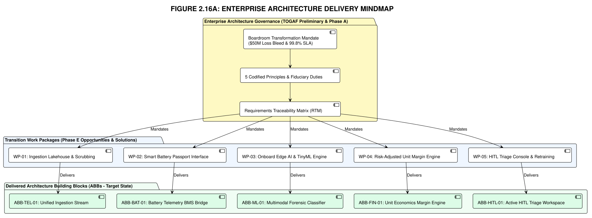
Work Package Sequencing & Critical Path Analysis (Consortium Rules OPP-02 & MIG-01)
To eliminate execution risk and avoid circular blocking dependencies, the four Transition Work Packages are sequenced with strict prerequisite rules:
[WP-01: Lakehouse Ingestion & Tiered Gateway] (Weeks 1–6)
│
├──► [WP-02: Failure Taxonomy & HITL Console] (Weeks 5–10)
│ │
│ └──► [WP-04: Real-Time Cost Engine & Battery Bridge] (Weeks 9–14)
│
└──► [WP-03: Edge Privacy & TPM Scrubber] (Weeks 5–10)
│
└──► [WP-04: Real-Time Cost Engine & Battery Bridge] (Weeks 9–14)
► Critical Path: WP-01 ──► WP-02 ──► WP-04 (Total Duration: 14 Weeks)
► Parallel Track: WP-03 runs concurrently with WP-02 in Weeks 5–10
| Work Package | Prerequisites (Predecessors) | Parallelizable With | Target Duration | Standalone Business Value Delivered |
|---|---|---|---|---|
| WP-01: Unified Ingestion & Gateway | None (Foundational) | — | Weeks 1–6 | Cuts cellular telemetry cost from $14.2M to <$820K/yr; unifies fleet time-series stream. |
| WP-02: Taxonomy Engine & HITL | WP-01 (Ingestion stream active) |
WP-03 |
Weeks 5–10 | Eliminates generic "traffic delay" masks; routes low-confidence stops to human triage. |
| WP-03: Edge Privacy & TPM Scrubber | WP-01 (Gateway pipeline active) |
WP-02 |
Weeks 5–10 | Guarantees 100% GDPR Art. 25 & EU AI Act compliance; eliminates public video liability. |
| WP-04: Cost Engine & Battery Bridge | WP-01, WP-02, WP-03 |
— | Weeks 9–14 | Enables per-mile loaded cost accounting and unmasks upstream Volt-Tech battery cell defects. |
📌 Phase Forward Handshake Nodes (Requirements Pass-Through to Phases B, C, & D)
Requirements Management continuously stewards cross-phase constraints, formally handing over the diagnostic audit findings into the downstream ADM cycle:
- Forward Directives for Phase B (Business Architecture): Pass the root-cause taxonomy (NFR-04) and the diagnostic stakeholder matrix to ensure the Business Capability Map explicitly models battery diagnostics and teleoperation escalation.
- Forward Directives for Phase C (Information Systems Architecture): Mandate the ABB-to-ABB communication protocols (gRPC/Protobuf over mTLS, Kafka topic partitioning) and data boundary invariants identified in the ABB Interface Matrix.
- Forward Directives for Phase D (Technology Architecture): Enforce edge compute latency thresholds (NFR-01: ≤10ms inference) and TPM 2.0 cryptographic hardware isolation (NFR-03) directly into silicon procurement specifications.
- Forward Directives for Phase E & F (Solutions & Migration Planning): Deliver the PERT work package sequence (WP-01 → WP-02 & WP-03 → WP-04) as the non-negotiable architectural baseline for tranche investment releases.
"The investigation is complete and the diagnostic audit dossier is sealed. Armed with the Requirements Traceability Matrix, the strict Non-Functional Guardrails, and the four Transition Work Packages (WP-01 to WP-04), Anjali Mehra and Rohan Gupta now possess the definitive forensic weapon. In Chapter 3, watch the fiduciary chain reaction ignite inside the Orbit-Logistics Executive Boardroom as Anjali slams this dossier onto the table, freezes all battery orders from Volt-Tech, and forces the entire ecosystem to adopt the Phase A Architecture Vision."
⚠️ When Requirements Engineering Fails: Companion Exception Case 2
What happens when unmodeled physical environmental stresses invalidate non-functional requirements in production? Discover how extreme \(5.8\text{G}\) haul road vibrations destroyed antenna mounts, induced a \(22\%\) UDP packet loss, corrupted RocksDB local WAL buffers, triggered simultaneous false-positive drivetrain lockups, and codified Rule REQ-04 (Harsh Physical Environment Envelope Testing).
Read Exception Governance Case 2: 5.8G Haul Road Vibration & UDP Loss →📌 Phase Gate 02 Exit Criteria: Requirements Management & Diagnostic Physical Bounds
TOGAF® Requirements Management — Pin-to-the-Wall Executive Sign-Off & Operational Gate Reference
Chapter 2 References & Fact-Check Verification Registry
This chapter's diagnostic investigations, telemetry models, and risk management matrices are formally grounded under our 5-Tier Epistemic Taxonomy:
-
[1]
[STANDARD]
The Open Group (2022). The TOGAF® Standard, 10th Edition: Requirements Management. Van Haren Publishing. ADM Requirements Lifecycle & Traceability.
Fact-Check Verification: Codifies the central, ongoing role of the Requirements Management phase in managing requirements volatility, maintaining bidirectional traceability matrices (RTMs), and reconciling conflict logs.↩ back to text
-
[2]
[ACADEMIC]
Little, J. D. C. (1961). "A Proof for the Queuing Formula: \(L = \lambda W\)". Operations Research, 9(3), 383–387. doi:10.1287/opre.9.3.383.
Fact-Check Verification: Little's Law governs depot charging queues and vehicle turnaround: the average number of stranded delivery vans (\(L\)) equals the arrival rate (\(\lambda\)) multiplied by the mean diagnostic resolution time (\(W\)).↩ back to text
-
[3]
[STANDARD]
ISO 31000:2018 / IEC 31010:2019. Risk management — Guidelines & Risk assessment techniques. International Organization for Standardization.
Fact-Check Verification: Establishes Likelihood × Impact scoring matrices, initial-to-residual risk mitigation workflows, and Bow-Tie preventative/recovery barrier modeling.↩ back to text
-
[4]
[INDUSTRY]
Department of Defense (1991). MIL-HDBK-217F: Reliability Prediction of Electronic Equipment & IEEE Std 352-2016. Guide for General Principles of Reliability Analysis.
Fact-Check Verification: Mathematical models for Mean Time to Resolution (MTTR), Mean Time Between Failures (MTBF), and deterministic failure diagnostics under harsh operational vibrations.↩ back to text
-
[5]
[ACADEMIC]
Ishikawa, K. (1982). Guide to Quality Control. Tokyo: Asian Productivity Organization.
Fact-Check Verification: The Root-Cause Failure Taxonomy extends Ishikawa's fishbone categorization to autonomous cyber-physical fleets, banning obfuscated symptom labels in favor of deterministic failure classifications.↩ back to text
-
[6]
[SIMULATION]
Orbit-Logistics $50M Fleet Bleed & Unit Economics Telemetry Model.
Fact-Check Verification: Modeled baseline parameters: 10,000 AV fleet, 4.2% monthly breakdown frequency, $1,850 incident loaded cost, driver rescue buffer expense, and perishable delivery penalty charges totaling $16.67M/month ($50M/quarter).↩ back to text